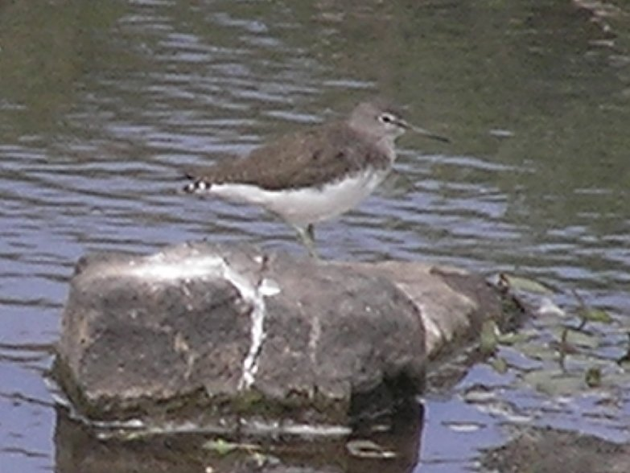

|  |
Frequently seen at the top of the waterfall (September-Feb). There are often half a dozen birds spaced along a 100 yard stretch of rocky river at the top of the falls. They largely keep to the rocks in the river and the rocky grassy islands. When disturbed they fly to another spot a few yards along the river. I have never seen one run.
This appears to be a larger species than the previous one. The tail markings in flight show a dark rectangular wedge on a white tail, which does not seem to be a particularly good match for any of those in the book. This species has black legs and beak. Note the absence of white shoulder patches as in the putative common sandpiper.